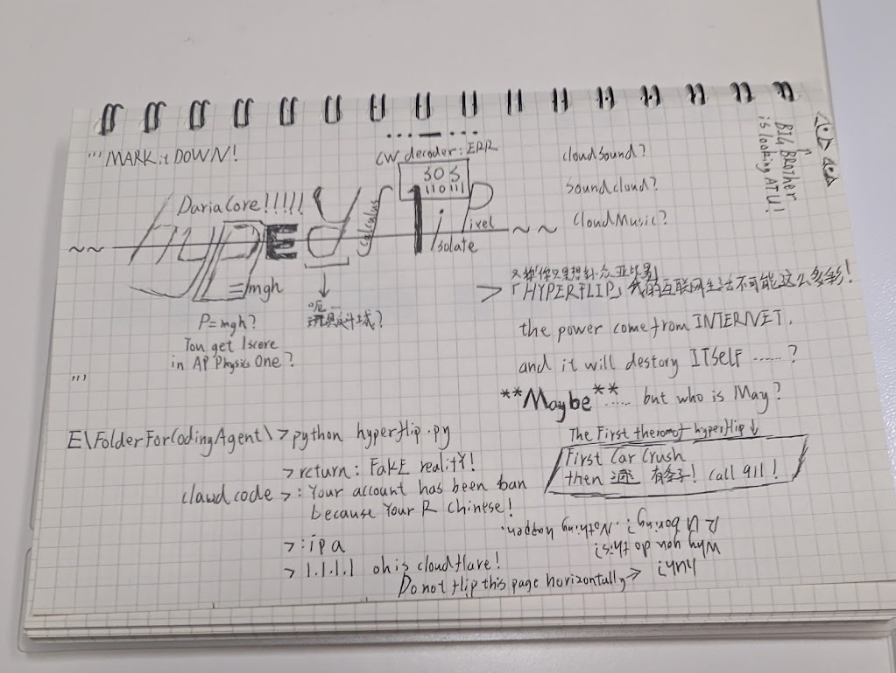

⚠ HORIZONTAL FLIP ENGAGED // MOUSE INVERTED
[ RESTORE / ESC ]
HYPERFLIP
//
MARK IT DOWN
HAND-DRAWN MARKDOWN ENGINE / DARIACORE COMPILATION [OVER 200BPM] / 17 HIDDEN TRACKS
COMPRESSION
[CW: ERR] · SOS
DISTORTION
[BIG BROTHER AT U]
'''MARK it DOWN!
'''
[TRACK #01 · 人肉 MARKDOWN 引擎]
Dariacore!!!!!!
[TRACK #05 · C位 HYPERFLIP & DARIACORE]
~~
~~
[TRACK #02 · 手绘删除线语法 ~~STRIKE~~]
= mgh
AP Physics 1 score?
[TRACK #09 · P=mgh? AP物理 1 分大保底]
呃… 玩具反斗城？
[TRACK #10 · 翻转字母 Я 撞脸 Toys"R"Us]
∫∫
calculus
|
solate
[TRACK #11 · 微积分乱入 ∫∫ & |solate]
... --- ...
CW decoder: ERR
303
110111
Pixel
[TRACK #12 · SOS 摩斯密码 & 303像素点]
CloudSound?
SoundCloud?
CloudMusic?
[TRACK #06 · 大脑宕机 CloudSound?]
又称《你只是想当小众亚比男》
> 「HYPERFLIP」我的互联网生活不可能这么多彩！
[TRACK #03 · Markdown 引用块 & 俺妹体]
the power come from INTERNET,
and it will destory ITSELF......?
[TRACK #07 · 赛博哲学名言与拼写destory]
**Maybe**...... but who is May?
[TRACK #04 · Markdown **人肉加粗** 谐音梗]
The First therom of hyperflip ↓
FIRST CAR CRUSH
🚨 then 条子来啦！ CALL 911 !
[TRACK #08 · 撞车与警笛采样圣经 therom]
BIG BROTHER IS
LOOKING AT U!
[TRACK #16 · 1984 老大哥在看着你]
E:\FolderForCodingAgent\ > python hyperflip.py
[TRACK #13 · Vibe Coder 本地开发路径]
claude code > : Your account has been ban
> return : FakE rea1iTy! / Because Your R Chinese!
[TRACK #14 · Claude Code 封号三连破防]
> ip a
> 1.1.1.1 oh is cloudflare!
[TRACK #15 · 赛博精神分裂查 IP 破案]
HANDWRITTEN MANUSCRIPT · ROTATED VIEW
✕
